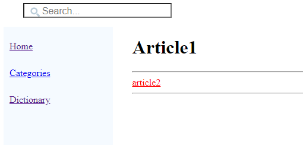
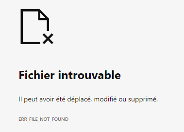
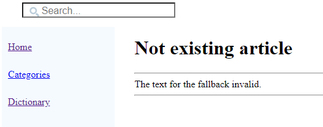

Home
Categories
Dictionary
Download
Project Details
Changes Log
What Links Here
How To
Syntax
FAQ
License
Fallback articles
1 Use cases
2 Specifying a fallback article
2.1 Fallback article for invalid links
2.2 Fallback article for not included article
3 Example
4 See also
2 Specifying a fallback article
2.1 Fallback article for invalid links
2.2 Fallback article for not included article
3 Example
4 See also
Fallback articles allow to specify articles which will be used where a reference to another article point to an article which does not exist.
If we click on the link (which points to a not existing article), we will get on the browser:
Now suppose that we create the following fallback article:
Use cases
There are two cases where you may want to specify fallback articles:- You don't want inter-wiki links which point to non existing articles to point to nothing, but you want to provide a custom article where these invalid linkds will point
- You want links to article in packages you don't include to point to a custom article
Specifying a fallback article
Fallback article for invalid links
To have a falback article which will be used for invalid links, you have to create an article with thefallbackInvalid root. For example:<fallbackInvalid title="Invalid link"> This link point to a not existing article. </fallbackInvalid>
Fallback article for not included article
To have a falback article which will be used for links to not included articles, you have to create an article with thefallbackNotIncluded root. For example:<fallbackNotIncluded title="Article not included"> This link point to an article which is not included. </fallbackINotIncluded>
Example
Suppose the following wiki file structure:-- source ---- article1.xml ---- index.xmlIf we have for the
article1.xml article:<article desc="article1"> <ref id="article2" /> </article>By default we will have the following content for this article:

If we click on the link (which points to a not existing article), we will get on the browser:

Now suppose that we create the following fallback article:
<fallbackInvalid> The text for the fallback invalid. </fallbackInvalid>We will have the following wiki file structure:
-- source ---- article1.xml ---- fallback.xml ---- index.xmlNow if we click on the link we will go to this fallback article:

See also
- Articles: Article files are XML files which define the articles in the wiki
- Types of files: This article explains the types of files which can be found in the wiki input
×

Categories: Structure